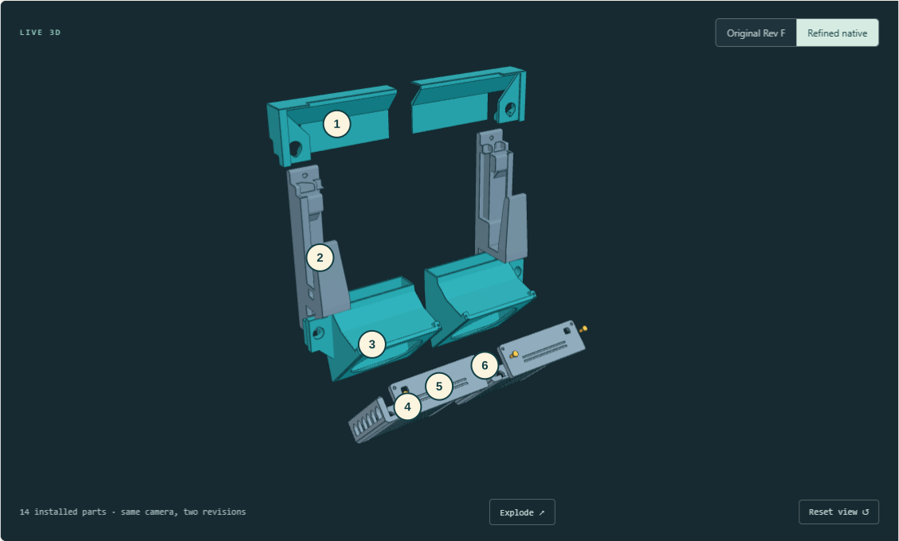

The fit &
finish edit.
Small details. A much more deliberate assembly.
Rounded transitions, consistent clearances and print-aware reliefs — rebuilt live, around the arms already on the printer.
Explore the actual CAD ↓Measured fan-interface
and rail-to-arm gaps
Valid installed solids
in the final STEP
Fully constrained
native sketches
Change to either
printed arm
Everything in its place.
Even pulled apart.

- Outlet railsClosed roofs, contoured arm reliefs, open exhaust.
- Printed armsFrozen reference geometry. No replacement required.
- Fan ductsLofted air path and separate wall closure patches.
- Sliding traysGrille-down prints and 0.30 mm mating clearances.
- Retainer capsOriginal rounded outline and cable opening.
- Four push-pinsOriginal split-crown retention preserved.
The little things
that weren’t little.
Native all the
way through.
Editable sketches and native features, shared design parameters, grounded and moving assembly relationships, and a separate measured-fit review sheet.
Live edits were grouped into complete operations to avoid a recompute after every small step. The application log and saved validation reports kept the result reviewable.
Matte teal materials, technical edges, a solid lighter background and a Fusion-inspired command ribbon. Installed Fusion definitions have also been inventoried; this screenshot shows the current approximation.
Follow the flow.
From the angled fan inlets, through the rear plenum, toward the laptop intake and hinge outlet. Actual simulation plots make the airflow assumptions visible.
This is an uncalibrated, non-thermal baseline study. The 3D run reached its iteration limit without meeting the strict convergence target. It does not establish cooling performance, and the Revision G fit/finish changes have not had a new CFD solve. Assumptions and full run notes ↗
The fit report.
| Interface / check | Result |
|---|---|
| Cap ↔ duct · left + right | 0.300 mm |
| Cap ↔ tray · left + right | 0.300 mm |
| Tray ↔ duct · left + right | 0.300 mm |
| Rail ↔ frozen arm · left + right | 0.300 mm |
| Four duct keys ↔ frozen receivers | ≥ 0.300 mm |
| Unintended assembly interference | 0 mm³ |
| Laptop, fan + wall-driver interference | 0 mm³ |
| Sampled insertion + service motions | PASS |
Six revised parts.
Already oriented.
Closed STL meshes, placed for the documented print orientation. Checked against the 256 mm bed, an 8 mm brim and the cutter exclusion.
The printed arms are not replaced. Original caps and pins remain unchanged. These six files supersede the corresponding older parts in print_ready/.
Get the editable FreeCAD model ↗
Download the review notes ↓